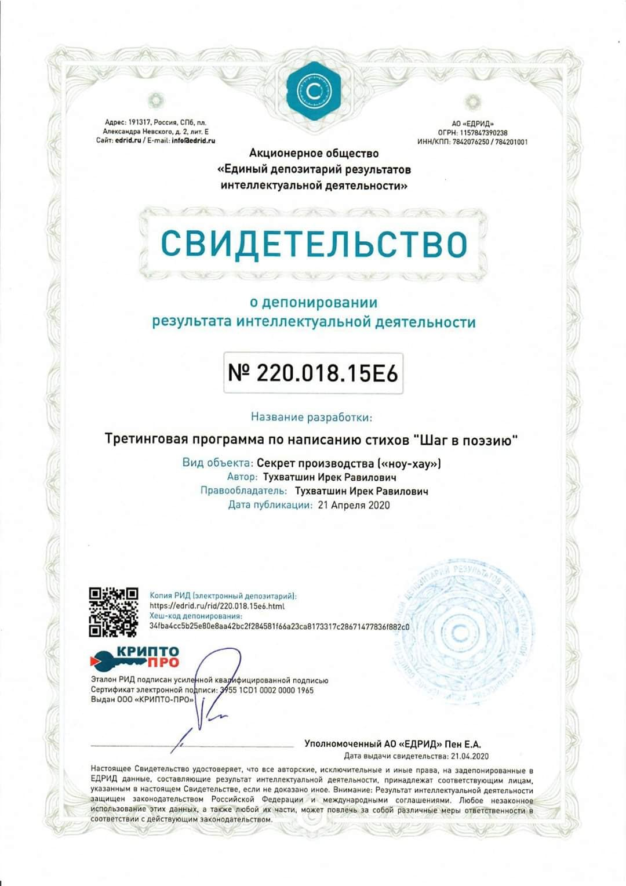

Откройте в себе поэта
Я приглашаю Вас овладеть основами поэтического творчества, чтобы Вы могли писать собственные стихотворения на регулярной основе.
Меня зовут Эрик Хват. Я автор проекта «Мастер слова» и создатель тренинга «Шаг в поэзию». Я разработал эту программу для тех, кто хочет уверенно сочинять уникальные стихи.
Тренинг подойдёт тем, кто любит читать стихи, фантазировать, придумывать истории и создавать в воображении яркие образы. Вам не обязательно уже писать стихи или иметь опыт поэтического творчества. Достаточно интереса к литературе и желания попробовать себя в роли автора.
Вы замечали, что одни стихи легко запоминаются, другие вызывают яркие образы, а некоторые хочется перечитывать? На тренинге Вы увидите, от чего это зависит и как управлять выразительностью собственного стихотворения.
Вы узнаете, чем творчество отличается от искусства, что такое эстетический вкус и как его развивать. Вы поймёте, из чего складывается стихотворение, как обычные слова превращаются в художественные образы и какие средства помогают создавать выразительные и музыкальные строки.
Вы освоите основы поэтического творчества и примените полученные знания на практике. Главным результатом станет Ваше собственное стихотворение, написанное с нуля.
В начале тренинга мы поговорим о творчестве и искусстве. Вы узнаете, чем отличается обычное творчество от художественного произведения и какую роль в этом играет эстетический вкус.
В программу входит практическое упражнение для развития эстетического вкуса и наблюдательности. Мы потренируем этот навык. Вы получите инструкцию и будете выполнять упражнение самостоятельно. После тренинга Вы сможете возвращаться к этой практике в любое время.
Далее мы перейдём к поэзии. Вы познакомитесь с устройством стихотворения, особенностями поэтической речи и средствами художественной выразительности.
Практическая работа станет основной частью тренинга. Вы выберете тему и определите идею своего стихотворения. Я помогу Вам разобраться, как воплотить замысел в поэтической форме, подобрать подходящие слова, создать художественные образы и добиться музыкальности строк.
Мы будем работать над Вашим стихотворением от первоначального замысла до готового произведения. Вы сможете задавать вопросы, обсуждать свои решения и получать мои рекомендации.
Сейчас тренинг проходит в индивидуальном премиальном формате. Каждая встреча состоится онлайн по видеосвязи и будет длиться от 2 до 2,5 часов.
Дату и время каждой встречи мы будем согласовывать отдельно. Программа тренинга остаётся единой, но темп работы будет зависеть от Вашей индивидуальной скорости освоения материала.
В дальнейшем я планирую запустить и групповой формат онлайн-тренингов.
Между встречами Вы будете выполнять практические задания и применять полученные знания в собственной работе над стихотворением.
На следующей встрече мы вместе разберём результаты Вашей работы, обсудим возникшие вопросы и найдём решения затруднений.
Такой формат позволит Вам двигаться в собственном темпе и постепенно закреплять освоенные навыки.
Я подготовил материалы, которые помогут Вам освоить основы поэтического творчества и выполнять практические задания. Вы будете получать их постепенно, по мере прохождения тренинга.
После завершения занятий все материалы останутся у Вас. Вы сможете пользоваться ими в личных целях и возвращаться к ним в дальнейшем.
Материалы и авторская технология тренинга предназначены для личного использования. Их нельзя передавать третьим лицам, публиковать или распространять.
Главным результатом тренинга станет написанное Вами стихотворение.
После завершения работы я попрошу Вас поделиться отзывом о тренинге в свободной форме. В обмен на отзыв Вы получите персональную именную грамоту.
В грамоте будут указаны Ваше имя, название стихотворения, одна строфа из него, дата завершения тренинга и моя подпись.
По желанию Вы сможете опубликовать своё произведение в социальных сетях или на литературном портале «Стихи.ру».
Я помогу Вам зарегистрироваться на портале, подготовить публикацию и выбрать литературный псевдоним, если Вы захотите выступать под творческим именем.
Публикация стихотворения и выбор псевдонима не являются обязательными условиями завершения тренинга или получения грамоты.
После завершения тренинга Вы сможете обращаться ко мне за технической поддержкой в разумных пределах.
Я помогу Вам разобраться с использованием полученных материалов и применением освоенной технологии в дальнейшей самостоятельной работе.

Меня зовут Эрик Хват. Я основатель и автор проекта «Мастер слова», а также создатель и ведущий творческого тренинга «Шаг в поэзию».
Я разработал программу, подготовил материалы и практические задания. На протяжении всего тренинга я буду лично работать с Вами, помогать осваивать поэтическое творчество и разбирать Ваши работы.
Тренинг «Шаг в поэзию» проходит индивидуально в онлайн-формате. Для участия мы согласуем удобное для Вас время первой встречи и обсудим организационные условия.
Если Вы хотите узнать подробности программы и записаться на тренинг, свяжитесь со мной через раздел «Контакты».
Восемь заблуждений, которые мешают писать стихи, с упражнениями к каждому, и пять шагов от мысли к стихотворению. Цена 550 ₽.
Подробнее
Программа «Шаг в поэзию» зарегистрирована как ноу-хау (секрет производства) в АО «ЕДРИД», № 220.018.15E6, 21.04.2020.
Другое направление проекта: Шаг в прозу. Об общей идее: о проекте «Мастер слова».
Я приглашаю Вас познакомиться с поэтическим творчеством, овладеть его основами и научиться самостоятельно писать стихи.
«Мастер слова» — от размышлений к творчеству, от слов к собственным произведениям.
Эрик Хват, основатель и автор проекта «Мастер слова», ведущий тренинга «Шаг в поэзию»
Тренинг «Шаг в поэзию» проходит индивидуально, онлайн. Оставьте контакт, мы согласуем время первой встречи и обсудим условия.
Не пользуетесь Telegram? Написать на почту или в Telegram.